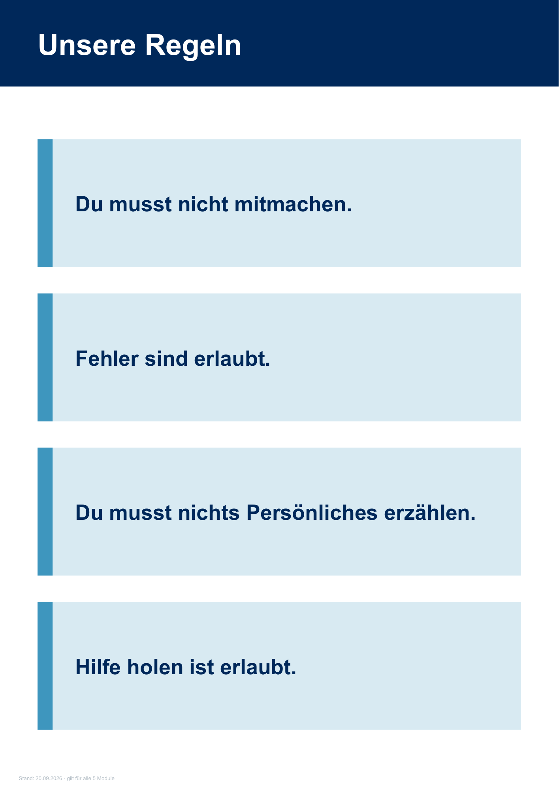

<!doctype html><html lang="de"><meta charset="utf-8"><meta name="viewport" content="width=device-width,initial-scale=1"><title>Druckansicht</title><link rel="stylesheet" href="../../pdf-vorschau.css"><header><h1>Regel-Plakat</h1><p>Unveränderte Seitenansicht der Originaldatei. Keine neue Rechtefreigabe.</p><button id="seitenDrucken">Seiten drucken</button> <a href="../../material/arbeitsmaterial/Regel-Plakat.pdf">Original-PDF öffnen</a></header><main></main><script src="../../pdf-vorschau-druck.js"></script></html>